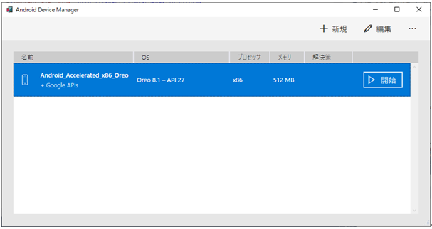
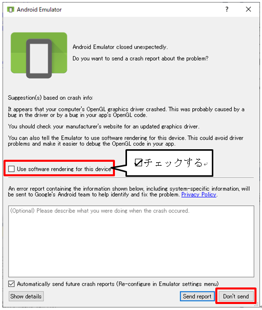
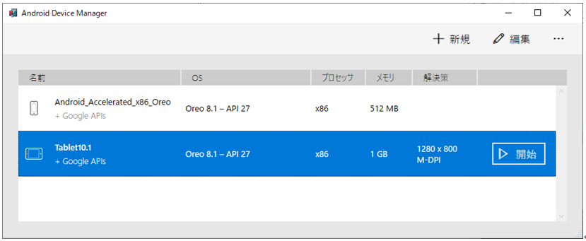
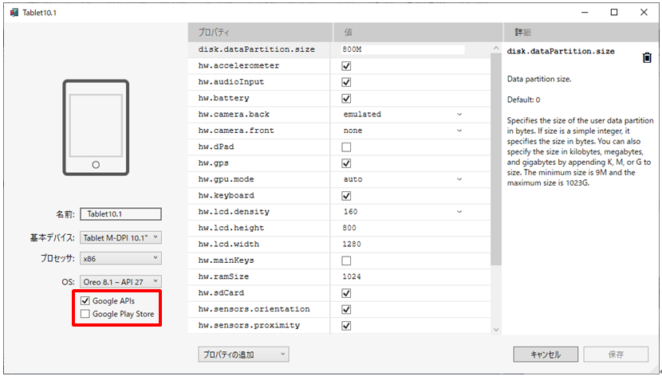

Visual Studio 2017 Xamarin.Formsプロジェクトのデバッグ時に、Androidエミュレータが起動しなかった時のメモです。
正確な技術資料などに基づいたものではありません。
いろいろと試して、とりあえず解消できた時のメモです。
当方で、Xamarin.Formsプロジェクトを新規作成し、そのままデバッグ → デバッグ実行としたのですが、エミュレータが起動しませんでした。
そこで、ネットの情報などをもとに、次の操作を行いました。
ツール → Android → Androidデバイスマネージャ
Androidデバイスマネージャのダイアログが表示されたら、開始をクリックしました。
ただし、当方の場合は、これでもトラブルは解消しませんでした。

上の操作の後も、デバッグ実行すると、出力ウィンドウのログの最後に次のようなメッセージが出るかもしれません。
残念ながら、どの操作でこのログが出力されたのかを失念してしまいました。
GL errors! frameworks/base/libs/hwui/renderthread/OpenGLPipeline.cpp:105
12-10 05:27:47.091 E/OpenGLRenderer(11298): GL error: Out of memory!
12-10 05:27:47.092 F/OpenGLRenderer(11298): GL errors! frameworks/base/libs/hwui/renderthread/OpenGLPipeline.cpp:105
12-10 05:27:47.092 F/libc (11298): Fatal signal 6 (SIGABRT), code -6 in tid 11332 (RenderThread), pid 11298 (ompanyname.App1)
1. で開始をクリックした時か、デバッグ → デバッグ実行をした時に、次のダイアログが表示されるかもしれません。
表示されたら、チェックボックスをオンにして、Don't send.ボタンをクリックします。

上のダイアログのメッセージです。
「Suggestion(s) based on crash info:
It appears that your computer's OpenGL graphics driver crashed. This was probably caused by a bug in the driver or by a bug in your app's OpenGL code.
You should check your manufacturer's website for an updated graphics driver.
You can also tell the Emulator to use software rendering for this device. This could avoid driver problems and make it easier to debug the OpenGL code in your app.」
メッセージの日本語訳です。
「クラッシュ情報に基づいた提案：
お使いのコンピューターのOpenGLグラフィックスドライバーがクラッシュしたようです。 これはおそらく、ドライバーのバグまたはアプリのOpenGLコードのバグが原因でした。
更新されたグラフィックドライバーについては、製造元のWebサイトを確認してください。
また、このデバイスにソフトウェアレンダリングを使用するようにエミュレーターに指示することもできます。 これにより、ドライバーの問題を回避し、アプリのOpenGLコードをデバッグしやすくなります。」
当方の場合は、これでトラブルを解消できました。
エミュレータの起動は時間がかかります。
以下は、当方の使い方です。
少しでも速く起動できて、そしてトラブルが少ない使い方だと思っています。
（下のAndroidデバイスマネージャ画面には「Tablet10.1」という名前のデバイスが追加されていますが、特に意味はありません。）
Visual Studioを起動したら、デバッグを始める前に、一度、Androidデバイスマネージャで使用するデバイスを開始しておきます。
そうすると、「このアプリがデバイスに変更を加えることを許可しますか？」という画面が表示されるかもしれません。
表示されたら「はい」で許可します。
いきなり、デバッグ → デバッグ実行とする場合よりも、トラブルが少ないように感じます。
開始したエミュレータは、終了させる必要はありませんので、次のデバッグ実行時には、エミュレータの起動時間を短く出来ます。

エミュレータが起動しないというトラブルとは関係ありませんが、使用するAPIは、必要なものだけにしておいた方が速く起動するように感じます。
